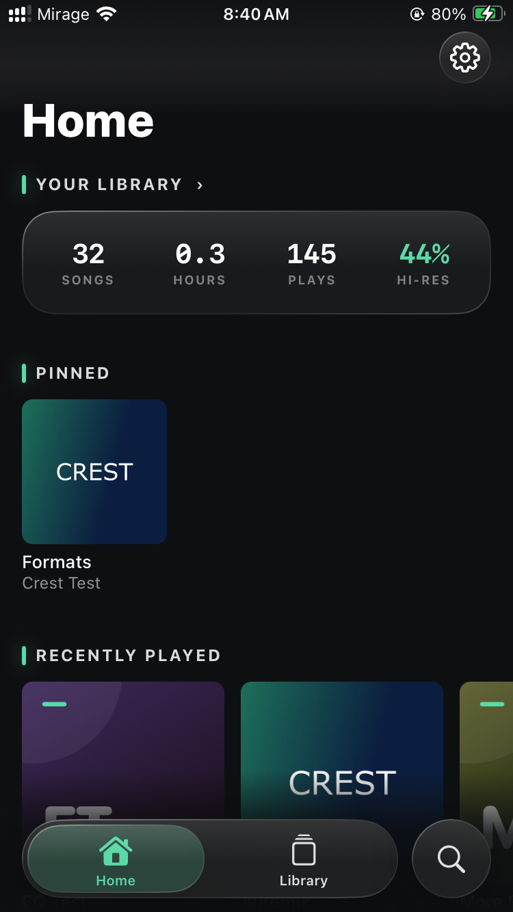
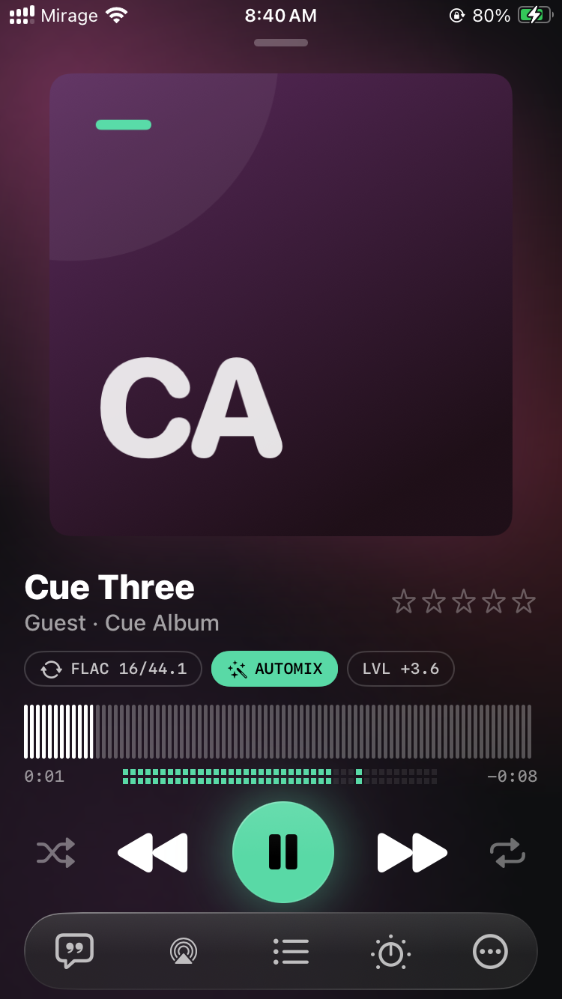
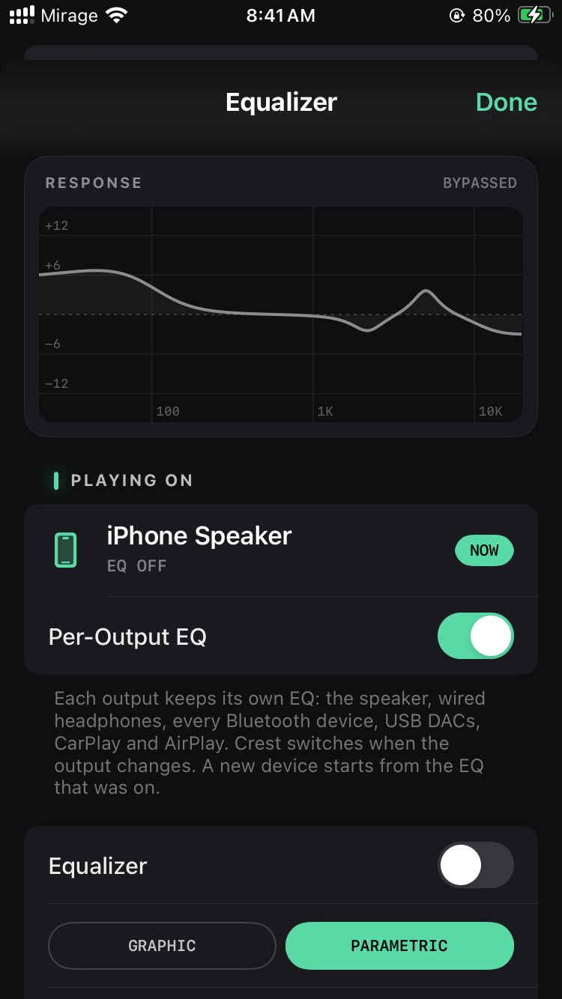
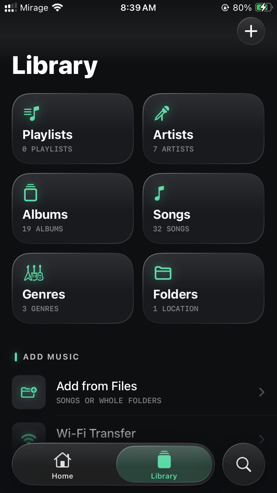
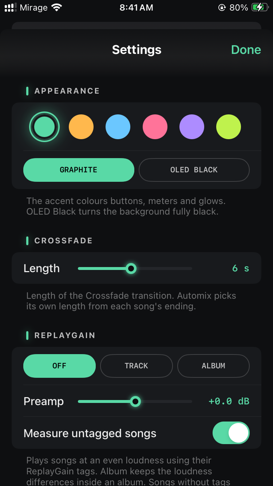

A high-quality offline music player for your own files. Every song plays at its own sample rate, and nothing in it looks like Apple Music.





Original work by John d_ie. Uses FFmpeg (LGPL 2.1), TagLib (MPL 1.1), Opus and Ogg (BSD), utfcpp (Boost) and Signalsmith Stretch (MIT). The full licences are in Settings → Open-Source Licenses.